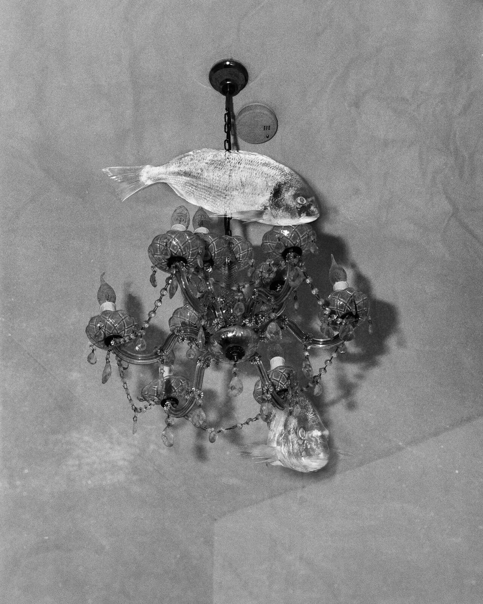
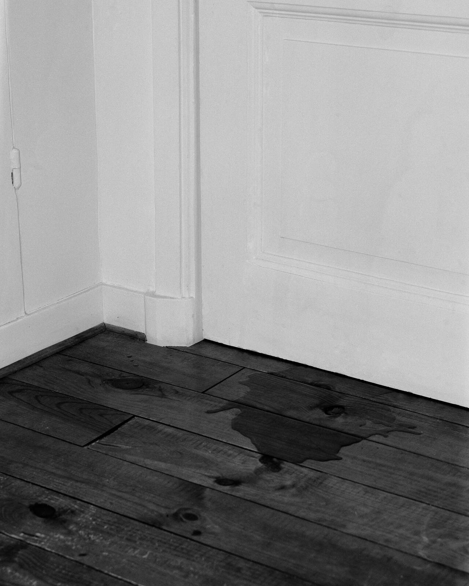
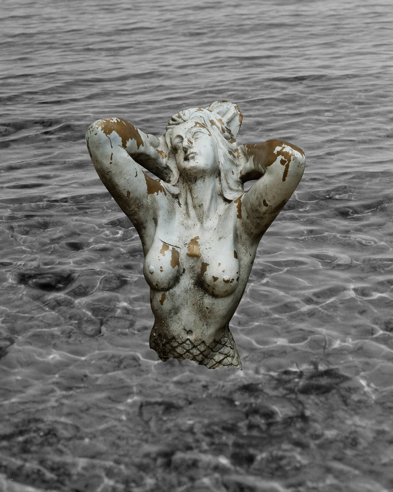
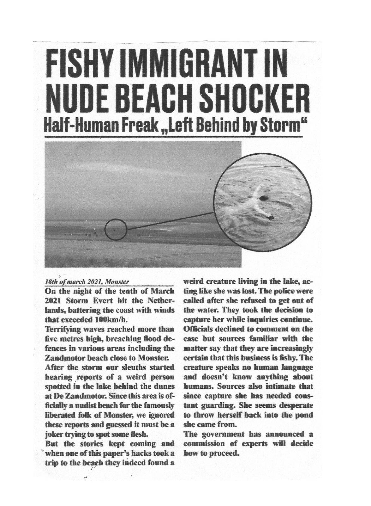
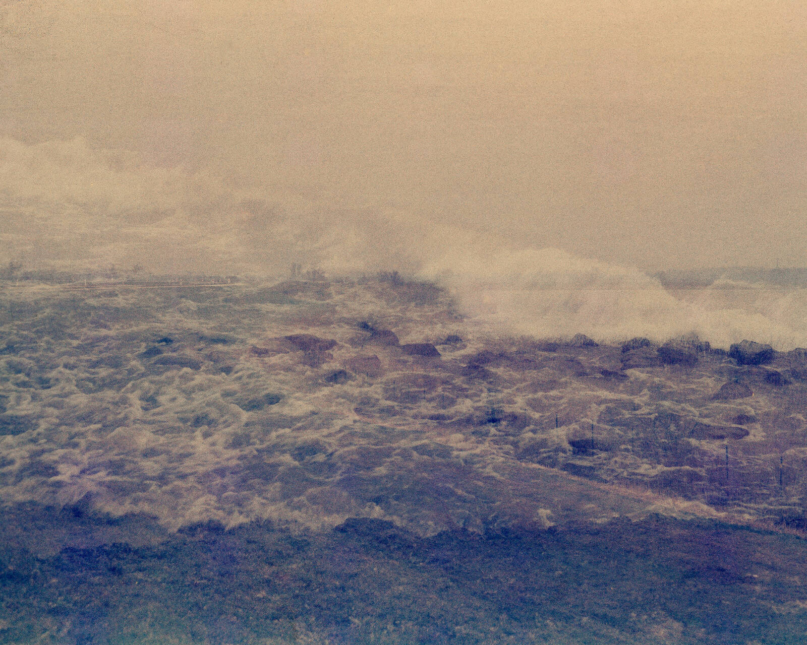
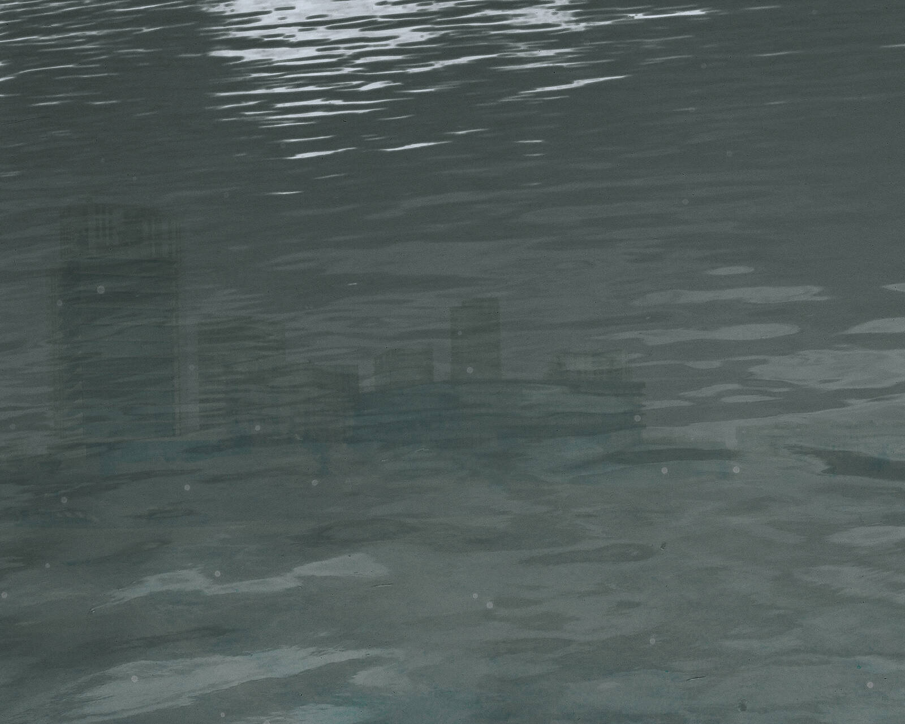
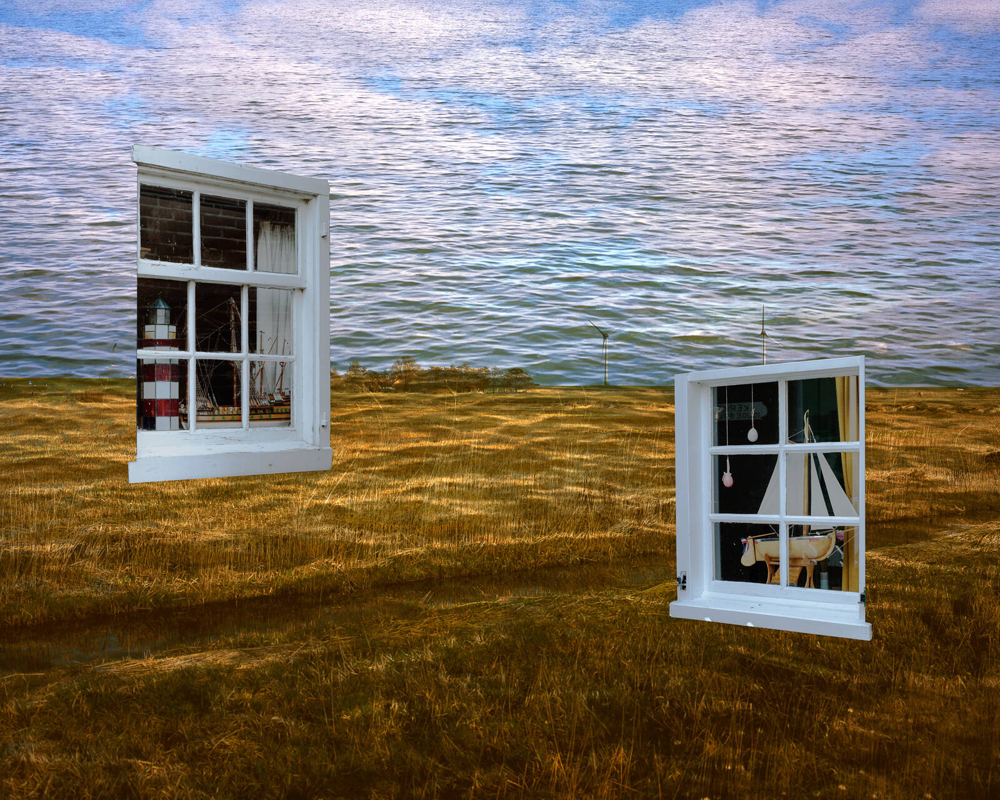

<!DOCTYPE html>
<html lang="en">
<head>
    <meta charset="UTF-8">
    <meta http-equiv="X-UA-Compatible" content="IE=edge">
    <meta name="viewport" content="width=device-width, initial-scale=1.0">
    <title>You are almost welcome</title>
    <link rel="stylesheet" href="projectstyle.css" type="text/css">
    <script src="https://ajax.googleapis.com/ajax/libs/jquery/3.5.1/jquery.min.js"></script>
</head>
<body>
    <nav>
        <a class="nav_home" href="../index.html">
            
            
        </a>
        <a class="previous" href="../Rafael_Roncato/"></a>
        <h3>Sophie Allerding</h3> 
        <a class="next" href="../Vera_Yijun_Zhou/"></a>
    </nav>
    <header>
        
        <div class="author">
            <a href="http://www.sophieallerding.com"><h3 id="name">Sophie Allerding ↗</h3></a>
        </div> 
        <h1>Waterland</h1>
        
    </header>
    <div class="project-description">
       <p>In the first years of the fifteenth century, during a heavy storm in the Netherlands, a wild and untamed sea body accidentally drifted through an opening in the dike 
        into a lake on the mainland. After the storm, the creature drifted around there, not knowing how to get back into the sea, because the hole in the dike had been closed. The people first were shocked by that strange appearance but after seen her more often, they captured her and took her to Edam. The creature had the appearance of a woman, but she couldn’t speak peoples language, she wore no clothes neither showed any other human behaviour, the opposite; the people had to guard 
        her well because she always tried to jump back into the water. The people had no doubt; this had to be a mermaid. <br>
        The mermaid is a figure that fascinates people worldwide and for millennia. Half human and half water life, she embodies both, the sea and us. <br>
        The sea is on the one hand life-giving but also a dangerous threat, our relationship towards it is complex, ambiguous and ambivalent, especially in a place like the 
        Netherlands, that has emerged from the sea and is about to sink back into it in the future. <br>
        By looking at the concept of the mermaid and her history, we can gain knowledge about our relationship and history with the sea and imagine a future of fruitful 
        coexistence with the oceans. 
    </p>
        
    </div>
    <div class="flex-container">
        <div class="flex-left">
            
            
            
            
            
            
            
                    </div>
        <div class="flex-right">

            
            
            
            
            
            
            
                    </div>    </div>
    
    <div class="gallery">

        
    </div>

    <script>

        var number;
        // setInterval(function() {
        jQuery.each(jQuery('.pics'),function(){
            var number =  Math.floor(Math.random() * 30);
            var number2 =  10+ Math.floor(Math.random() * 20);
            var number3 =  70 + Math.floor(Math.random() * 30);
            console.log(number3)
            
            jQuery(this).css('margin-left', number+'vw');
            jQuery(this).css('margin-top', number2+'vw');
            jQuery(this).css('width', number3+'vw');
            // console.log(jQuery(this).css('margin-right', number+'vh'))
          });
        // }, 1000);

        // $('.pics').forEach(element => {
        //     console.log(element)
        //     number = 1 + Math.floor(Math.random() * 16);
        // });


    </script>
</body>
</html>